About this module
This page contains 15 classroom-ready lessons. Every lesson includes a longer explanation, learning targets, an applied capstone example, and a local instructional diagram that shows the lesson rules in a clear three-step sequence.
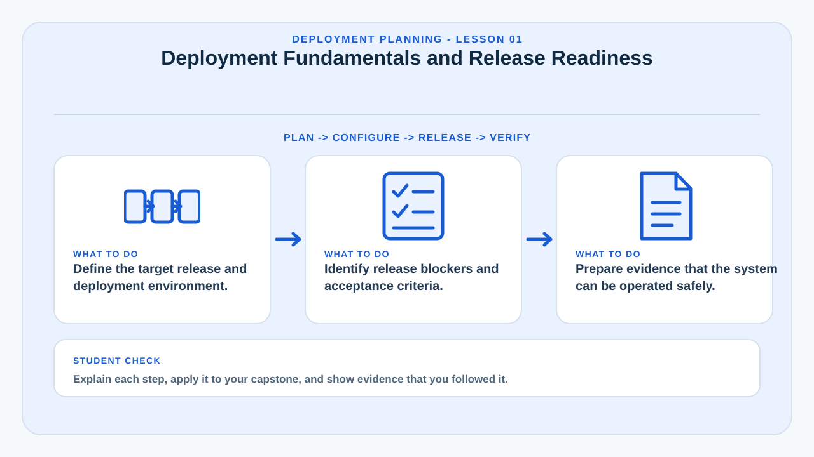
Deployment Fundamentals and Release Readiness
Deployment is the disciplined process of moving a tested system from development into an environment where intended users can actually use it.
A capstone project is not deployment-ready simply because the application runs on the developer's laptop. Release readiness means the software, infrastructure, data, documentation, support process, security controls, and recovery procedures have all reached an acceptable operational state. The team must know what is being released, where it will run, who will use it, and what conditions must be satisfied before the launch is approved.
A practical readiness review checks functional completeness, unresolved defects, user acceptance results, performance behavior, security findings, backup availability, environment configuration, database migration status, and stakeholder approval. This review converts a vague statement such as “the system is finished†into evidence that the system can be operated responsibly.
For a capstone defense, deployment readiness is important because it demonstrates that the project is more than a prototype. It shows that the team understands the difference between software construction and service operation.
Learning targets
- Define the target release and deployment environment.
- Identify release blockers and acceptance criteria.
- Prepare evidence that the system can be operated safely.
Why this matters in a capstone
This lesson helps the team connect implementation decisions to deployment evidence, technical documentation, operational readiness, and questions that may be raised during evaluation or defense.
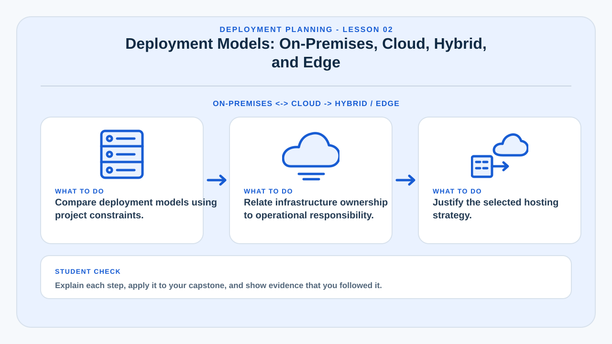
Deployment Models: On-Premises, Cloud, Hybrid, and Edge
The deployment model determines where the system executes, who manages the infrastructure, and what operational constraints must be addressed.
On-premises deployment places servers and storage inside an organization's own facilities. It can provide direct control over data and networking, but it also transfers hardware maintenance, power protection, physical security, patching, and capacity management to the organization. Cloud deployment uses provider-managed infrastructure and can simplify provisioning, public access, scaling, and managed services.
A hybrid model combines local and cloud resources, while edge deployment moves computation closer to devices or users. The correct model depends on internet reliability, privacy requirements, budget, technical staff, latency, data residency, expected traffic, and recovery objectives.
Capstone teams should justify the selected model instead of choosing a platform only because it is familiar. A deployment decision is stronger when supported by a requirements-to-infrastructure mapping.
Learning targets
- Compare deployment models using project constraints.
- Relate infrastructure ownership to operational responsibility.
- Justify the selected hosting strategy.
Why this matters in a capstone
This lesson helps the team connect implementation decisions to deployment evidence, technical documentation, operational readiness, and questions that may be raised during evaluation or defense.
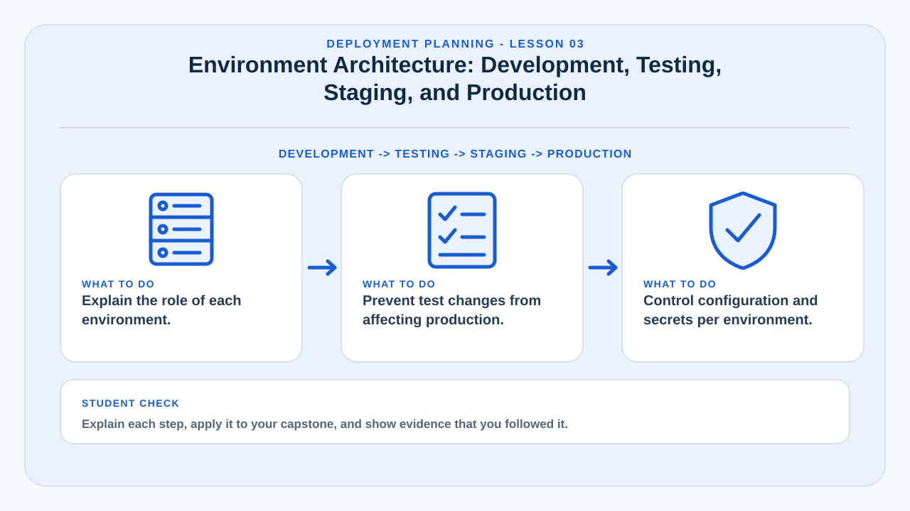
Environment Architecture: Development, Testing, Staging, and Production
Separate environments reduce the risk of experimenting directly on the live system.
Development is where programmers build and change features. Testing is used for systematic verification. Staging should resemble production closely enough to validate configuration, integrations, database changes, and release procedures. Production is the live environment used by real users and should have the strongest change controls.
Environment separation prevents test data, debug settings, unstable code, and experimental database changes from contaminating production. Each environment should have its own configuration values, secrets, databases where appropriate, and access rules.
Students should also understand configuration drift. If staging and production differ significantly, a release that succeeds in staging may fail in production. Infrastructure documentation and repeatable setup procedures help keep environments consistent.
Learning targets
- Explain the role of each environment.
- Prevent test changes from affecting production.
- Control configuration and secrets per environment.
Why this matters in a capstone
This lesson helps the team connect implementation decisions to deployment evidence, technical documentation, operational readiness, and questions that may be raised during evaluation or defense.
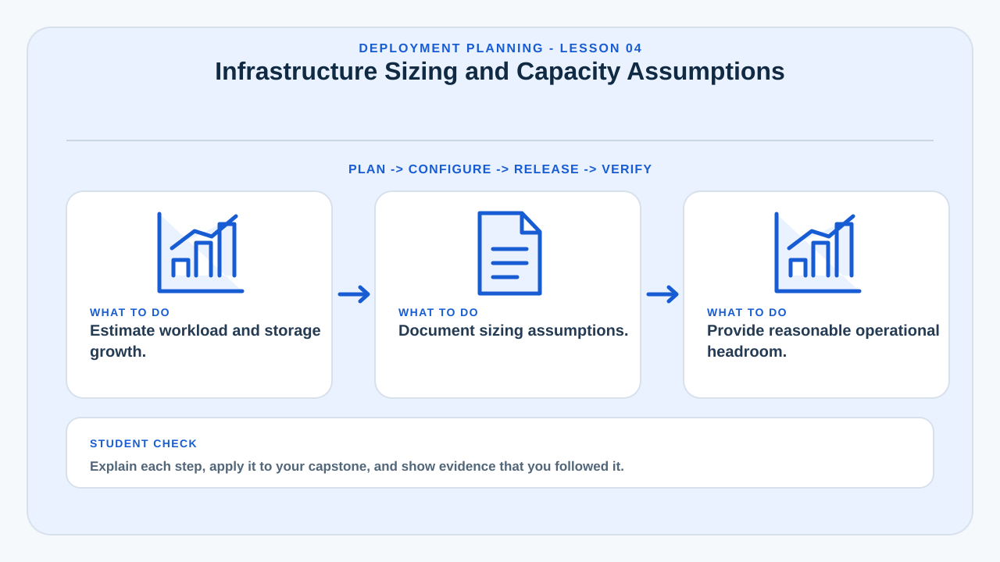
Infrastructure Sizing and Capacity Assumptions
Deployment planning must estimate the computing resources required to support expected workload.
Sizing considers CPU, memory, storage, network throughput, concurrent users, request rate, database growth, file uploads, background jobs, and peak usage. Initial estimates do not need to be perfect, but assumptions must be explicit and measurable.
A team can create a basic capacity model by estimating active users, average requests per user, average response size, database transaction frequency, and data growth per month. The purpose is to avoid deploying a system with no idea whether the selected environment can support realistic use.
Capacity planning also includes headroom. A production system should not operate at its maximum limit during normal conditions because updates, bursts of traffic, backups, and unexpected workloads require spare resources.
Learning targets
- Estimate workload and storage growth.
- Document sizing assumptions.
- Provide reasonable operational headroom.
Why this matters in a capstone
This lesson helps the team connect implementation decisions to deployment evidence, technical documentation, operational readiness, and questions that may be raised during evaluation or defense.
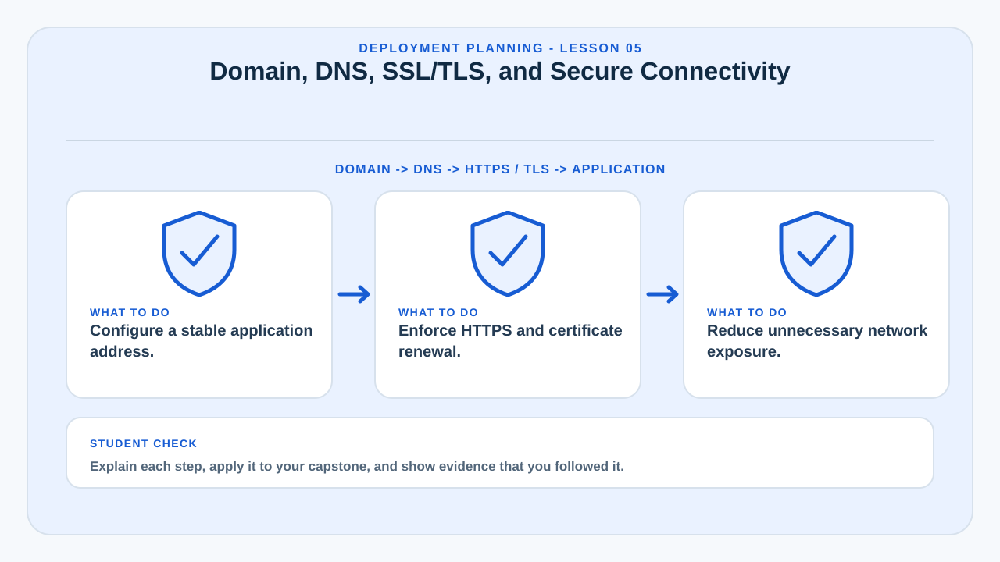
Domain, DNS, SSL/TLS, and Secure Connectivity
A production deployment needs reliable naming and encrypted communication.
A domain gives users a stable, human-readable address. DNS maps that domain to the service location. SSL/TLS protects data in transit by encrypting connections between clients and the server. HTTPS should be treated as a baseline requirement for login pages, personal data, administration portals, APIs, and modern web applications.
Deployment teams should understand DNS records, certificate issuance, renewal, redirect behavior, and mixed-content problems. A valid certificate is not enough if some page resources still load over insecure HTTP.
Secure connectivity also includes firewall rules, private database access, VPN requirements where appropriate, and avoiding unnecessary exposure of management interfaces.
Learning targets
- Configure a stable application address.
- Enforce HTTPS and certificate renewal.
- Reduce unnecessary network exposure.
Why this matters in a capstone
This lesson helps the team connect implementation decisions to deployment evidence, technical documentation, operational readiness, and questions that may be raised during evaluation or defense.
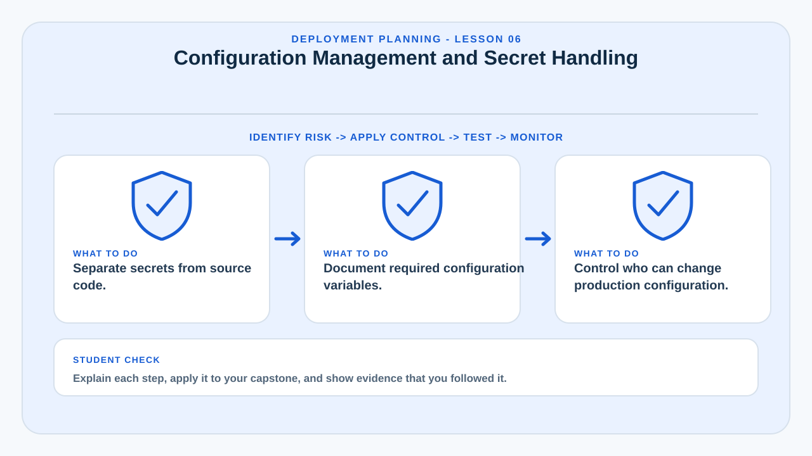
Configuration Management and Secret Handling
Production configuration should be separated from source code and handled as controlled operational data.
Applications usually require database URLs, API keys, email credentials, storage tokens, encryption keys, and environment-specific settings. Hard-coding these values into public source code creates security and maintenance problems.
Environment variables, secret managers, protected configuration files, and deployment-platform settings are common approaches. Teams should define which configuration values are required, who may change them, and how changes are audited or documented.
A capstone team should also provide safe defaults and clear startup validation. If a required secret is missing, the application should fail clearly rather than silently running in an insecure or broken state.
Learning targets
- Separate secrets from source code.
- Document required configuration variables.
- Control who can change production configuration.
Why this matters in a capstone
This lesson helps the team connect implementation decisions to deployment evidence, technical documentation, operational readiness, and questions that may be raised during evaluation or defense.
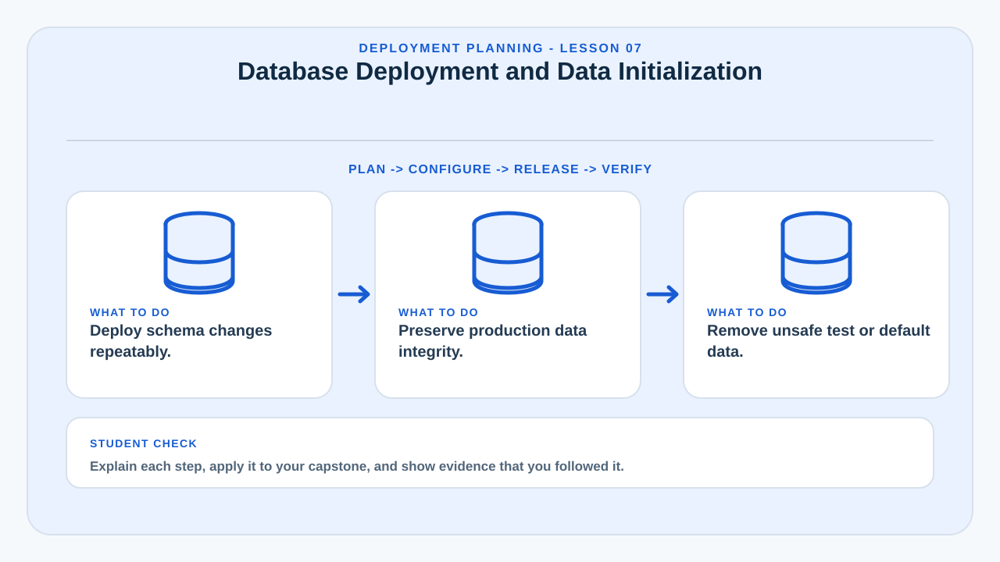
Database Deployment and Data Initialization
The application and its database must be deployed as a coordinated release.
Database deployment includes schema creation, indexes, constraints, reference data, default roles, administrative accounts, migration scripts, and permissions. Database changes can be more difficult to reverse than code changes because production data must be preserved.
Teams should avoid manually editing production tables without a record of what changed. Versioned migration scripts provide a repeatable sequence for moving the schema from one known version to another.
Initialization should also be minimal and secure. Default passwords must be changed, test accounts should be removed, and production data should not be mixed with demonstration data unless clearly separated.
Learning targets
- Deploy schema changes repeatably.
- Preserve production data integrity.
- Remove unsafe test or default data.
Why this matters in a capstone
This lesson helps the team connect implementation decisions to deployment evidence, technical documentation, operational readiness, and questions that may be raised during evaluation or defense.
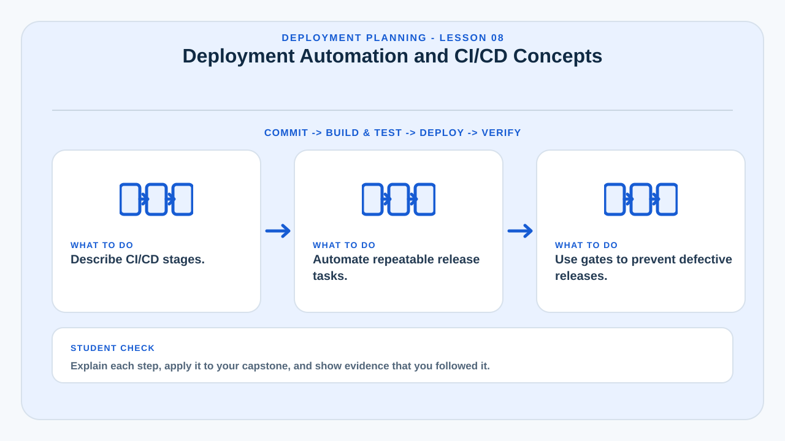
Deployment Automation and CI/CD Concepts
Automation reduces repetitive manual steps and makes releases more consistent.
Continuous Integration automatically builds and tests code changes. Continuous Delivery prepares verified releases so they can be deployed reliably, while Continuous Deployment may automatically release changes after passing defined controls. A capstone project does not need an enterprise-grade pipeline, but students should understand the principles.
A simple pipeline may install dependencies, run tests, build assets, check formatting, package the application, and deploy to a staging environment. Automated steps create evidence and reduce the chance that a deployment succeeds only because one developer remembers a special manual procedure.
Automation must still include controls. A failed test, missing secret, or migration error should stop the release instead of being ignored.
Learning targets
- Describe CI/CD stages.
- Automate repeatable release tasks.
- Use gates to prevent defective releases.
Why this matters in a capstone
This lesson helps the team connect implementation decisions to deployment evidence, technical documentation, operational readiness, and questions that may be raised during evaluation or defense.
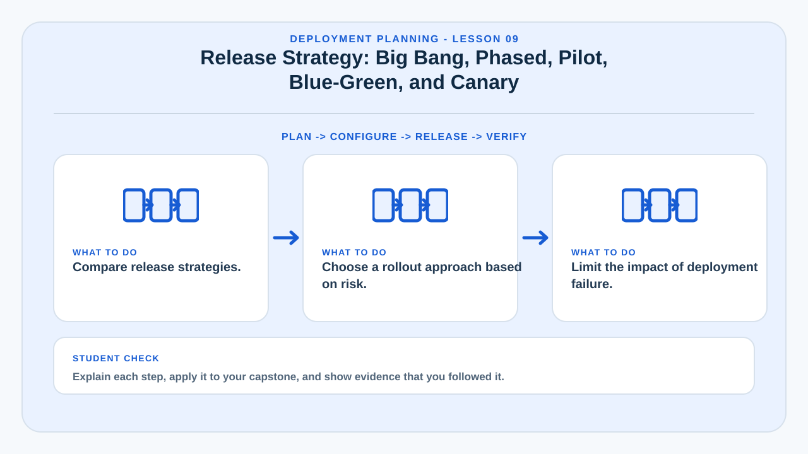
Release Strategy: Big Bang, Phased, Pilot, Blue-Green, and Canary
The release strategy determines how quickly users are moved to the new system and how failure risk is contained.
A big-bang release moves all users at once and is simple but risky. A phased release introduces the system by department, location, feature, or user group. A pilot release starts with a small representative group to identify operational issues before full rollout.
Blue-green deployment maintains two production-like environments so traffic can switch between versions. Canary deployment exposes a new version to a small portion of users first. These strategies are more common in mature operations but illustrate an important principle: limit the blast radius of change.
Capstone teams should choose a strategy based on system criticality, user count, reversibility, training needs, and infrastructure capabilities.
Learning targets
- Compare release strategies.
- Choose a rollout approach based on risk.
- Limit the impact of deployment failure.
Why this matters in a capstone
This lesson helps the team connect implementation decisions to deployment evidence, technical documentation, operational readiness, and questions that may be raised during evaluation or defense.
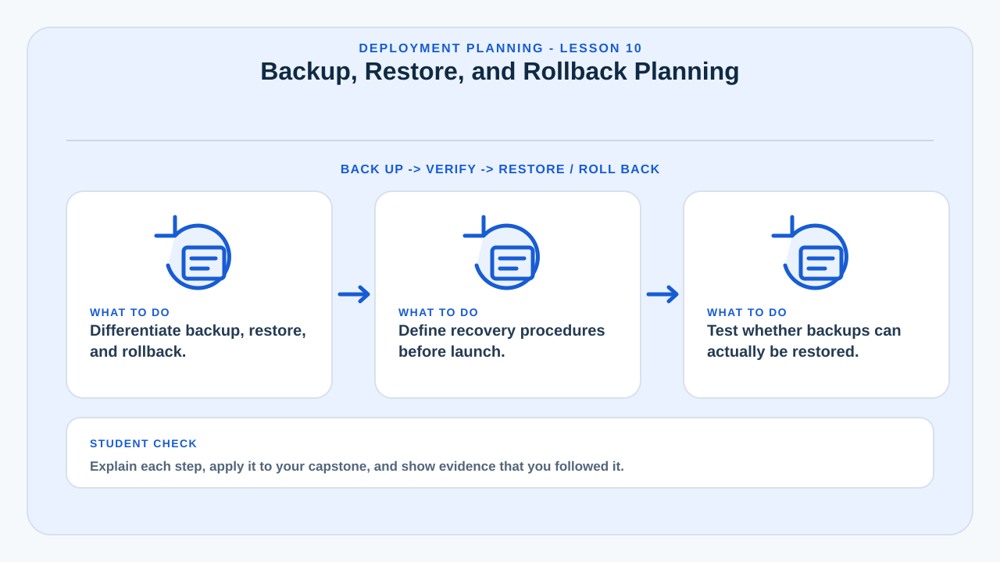
Backup, Restore, and Rollback Planning
A release plan is incomplete without a credible method for recovering from failure.
Backups protect data, while rollback restores the previous application state after a defective release. These are related but not identical. Restoring code may be fast, but rolling back a database migration can be difficult if the new version has already modified real data.
Teams should define backup frequency, retention, storage location, encryption, restore testing, and recovery responsibilities. A backup that has never been restored in a test should not be assumed to be reliable.
A rollback plan should state the trigger conditions, steps, responsible person, expected impact, and how data created during the failed release will be handled.
Learning targets
- Differentiate backup, restore, and rollback.
- Define recovery procedures before launch.
- Test whether backups can actually be restored.
Why this matters in a capstone
This lesson helps the team connect implementation decisions to deployment evidence, technical documentation, operational readiness, and questions that may be raised during evaluation or defense.
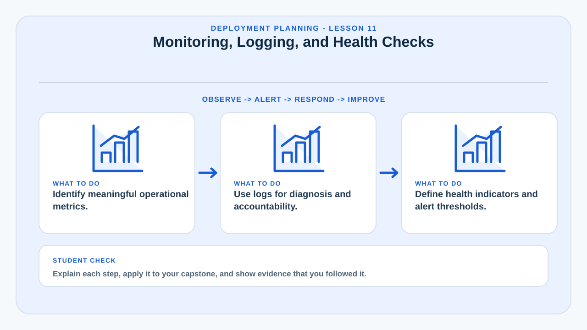
Monitoring, Logging, and Health Checks
After deployment, the team needs visibility into whether the system is healthy.
Monitoring tracks metrics such as uptime, response time, CPU, memory, disk usage, database connections, error rate, and request volume. Logging records events that help explain what happened. Health checks provide a quick machine-readable indication of whether important components are functioning.
Good observability allows the team to detect problems before users repeatedly report them. Logs should include useful context without exposing passwords, tokens, or sensitive personal information.
For a capstone, a modest monitoring plan is sufficient if it clearly identifies what will be measured, acceptable thresholds, and the response when thresholds are exceeded.
Learning targets
- Identify meaningful operational metrics.
- Use logs for diagnosis and accountability.
- Define health indicators and alert thresholds.
Why this matters in a capstone
This lesson helps the team connect implementation decisions to deployment evidence, technical documentation, operational readiness, and questions that may be raised during evaluation or defense.
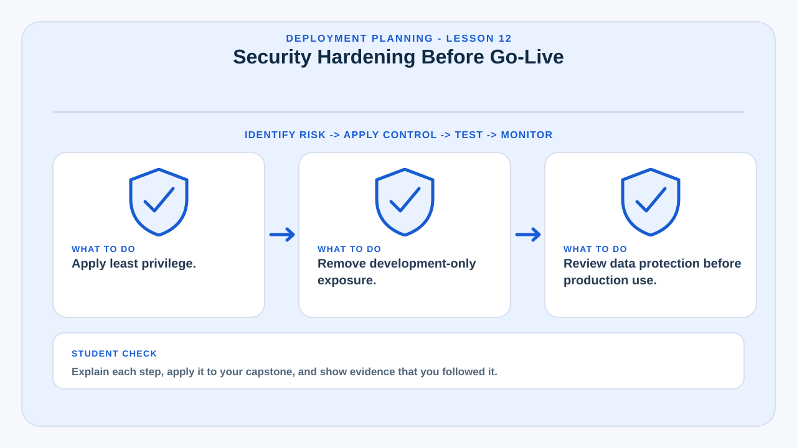
Security Hardening Before Go-Live
Deployment is the point where development assumptions must be converted into production security controls.
Before go-live, debug mode should be disabled, unnecessary ports closed, dependencies updated, default credentials removed, privileged accounts reviewed, input validation confirmed, session settings hardened, and backups protected.
Production permissions should follow least privilege. The web application account should not automatically have full administrative privileges on the operating system or database. Administrative routes should be protected separately from ordinary user functions.
Security review should also consider privacy. Production logs, backups, analytics, and exports may contain personal data and therefore require controlled access and retention.
Learning targets
- Apply least privilege.
- Remove development-only exposure.
- Review data protection before production use.
Why this matters in a capstone
This lesson helps the team connect implementation decisions to deployment evidence, technical documentation, operational readiness, and questions that may be raised during evaluation or defense.
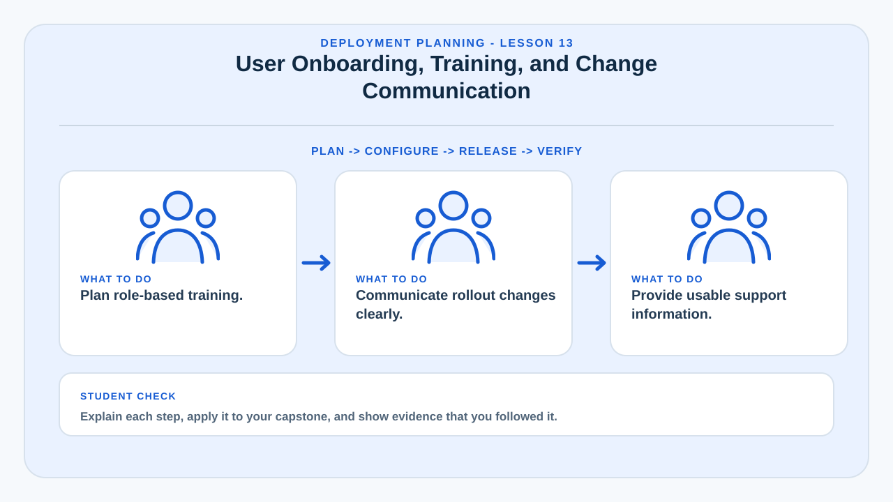
User Onboarding, Training, and Change Communication
Successful deployment depends on people understanding how and why the new system should be used.
Users need more than an announcement that a system is live. They may need account activation, orientation, quick-start instructions, workflow changes, role-specific training, contact details for support, and clear expectations about old processes.
Training should focus on tasks users actually perform. Administrators may need configuration and reporting training, while ordinary users may need only login, submission, search, and status-tracking procedures.
Change communication should be timed around the rollout and should explain what is changing, when it changes, what users must do, and where they can report issues.
Learning targets
- Plan role-based training.
- Communicate rollout changes clearly.
- Provide usable support information.
Why this matters in a capstone
This lesson helps the team connect implementation decisions to deployment evidence, technical documentation, operational readiness, and questions that may be raised during evaluation or defense.
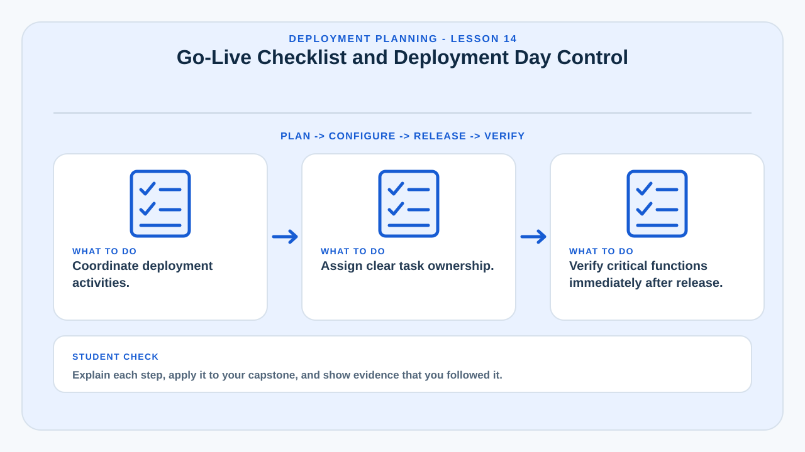
Go-Live Checklist and Deployment Day Control
The go-live checklist coordinates the final sequence of technical and organizational actions.
A deployment-day checklist may include maintenance notification, final backup, release package verification, configuration review, migration execution, service restart, smoke testing, DNS change, monitoring activation, stakeholder confirmation, and rollback decision points.
Ownership matters. Every major task should have a responsible person and a completion status. This reduces confusion when multiple team members are working during a high-pressure release window.
Smoke tests should verify critical paths immediately after deployment: authentication, database access, core transactions, file handling, notifications, and administrative access.
Learning targets
- Coordinate deployment activities.
- Assign clear task ownership.
- Verify critical functions immediately after release.
Why this matters in a capstone
This lesson helps the team connect implementation decisions to deployment evidence, technical documentation, operational readiness, and questions that may be raised during evaluation or defense.
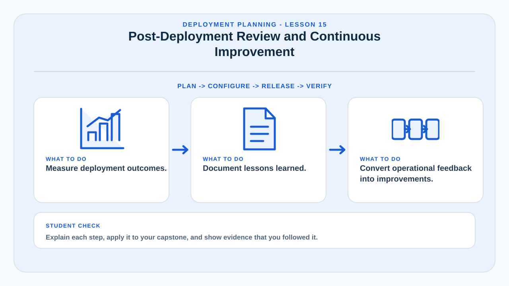
Post-Deployment Review and Continuous Improvement
Deployment ends the release event, but it begins the operational learning cycle.
A post-deployment review examines what happened during launch, which incidents occurred, what users reported, whether performance matched expectations, and whether the deployment process should change. The goal is learning rather than blame.
Teams should compare actual outcomes with the deployment plan. If deployment required undocumented manual fixes, those steps should be documented or automated. If users struggled with a feature, the interface or training material may need improvement.
Capstone teams can use the review to demonstrate professional maturity by documenting lessons learned, unresolved operational risks, maintenance priorities, and recommended next actions.
Learning targets
- Measure deployment outcomes.
- Document lessons learned.
- Convert operational feedback into improvements.
Why this matters in a capstone
This lesson helps the team connect implementation decisions to deployment evidence, technical documentation, operational readiness, and questions that may be raised during evaluation or defense.